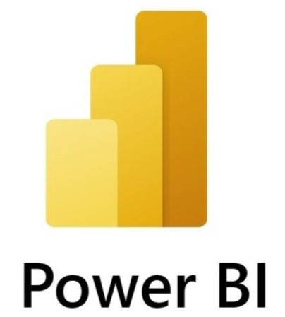
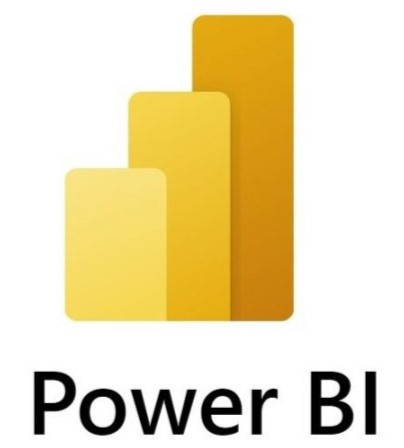

RHU-MARTINS
Tenho 22 anos e estou atualmente no 5º período do curso de Sistemas de Informação.
Gosto de atuar no desenvolvimento de software, análise de requisitos e gestão de projetos.
DEV WEB 2.
Estudos
Me dedicando ao modelo autodidata de Front-End, estudo a tríade fundamental de desenvolvimento web, HTML, CSS e JavaScript. Além disso, estou explorando ferramentas essenciais como Bootstrap para aprimorar o design responsivo das minhas criações. Para a análise e exibição avançada de dados, estou adquirindo conhecimentos no Power BI. Todo o meu progresso e projetos estão sendo registrados e compartilhados através do GitHub.

 

Hobbies
Em meu tempo livre pratico esportes como Downhill, que me proporciona uma adrenalina em trilhas desafiadoras. Também sou um entusiasta do Airsoft, onde a estratégia e a ação se combinam de forma emocionante. Além disso pratico o Skate, explorando a criatividade e a habilidade nas manobras. Cada um desses passatempos traz uma dose única de satisfação às minhas horas de lazer.